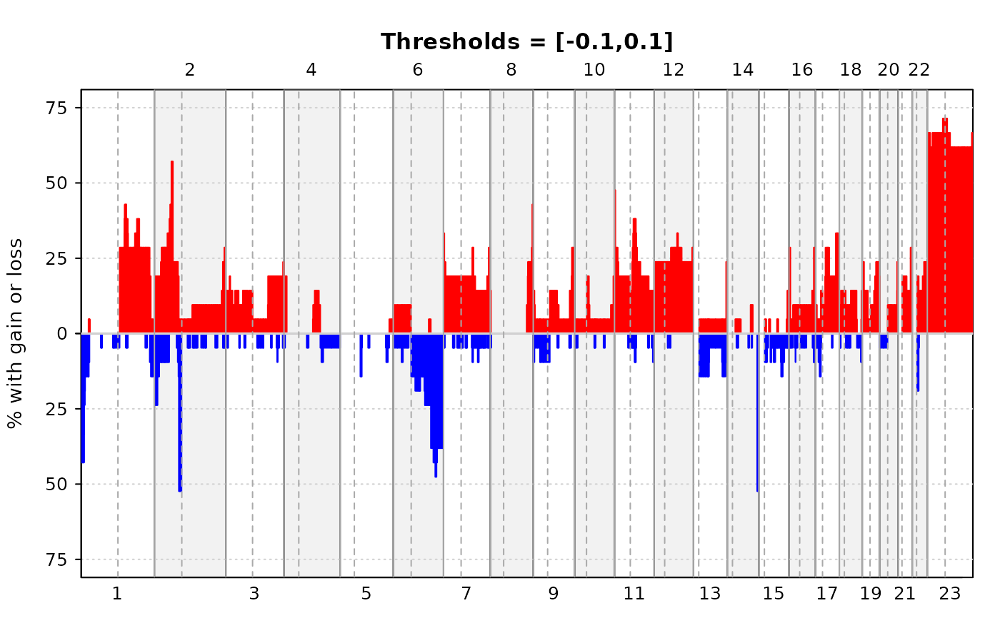
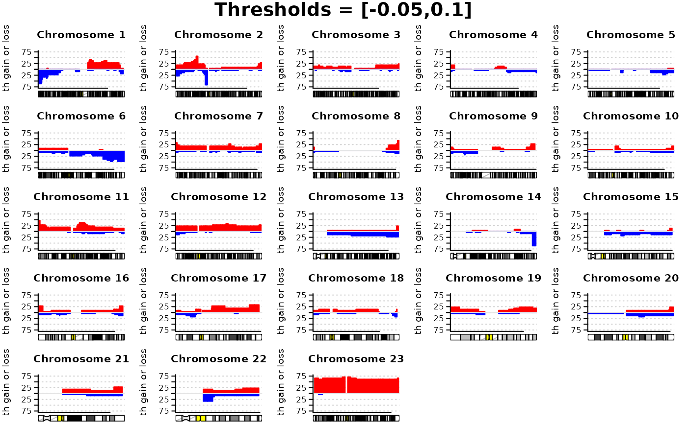
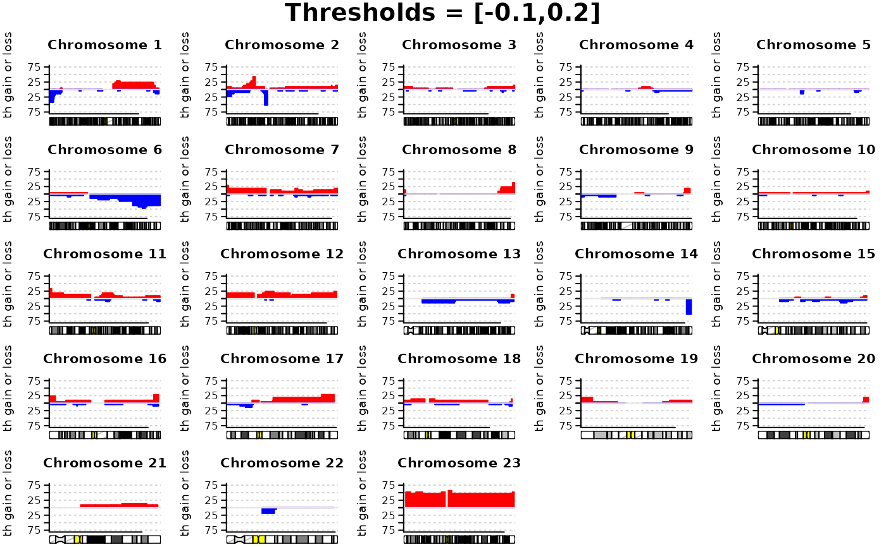

Plot percentage of samples with an aberration at a genomic position
Source:R/plotFreq.r
plotFreq.RdPlot the percentage of samples that have an amplification or deletion at a genomic position. Amplifications/deletions correspond to copy number values that are above/below a pre-defined threshold. Frequencies may be plotted over the entire genome or separately for each chromosome.
Usage
plotFreq(
segments,
thres.gain,
thres.loss = -thres.gain,
pos.unit = "bp",
chrom = NULL,
layout = c(1, 1),
...
)Arguments
- segments
a data frame containing the segmentation results found by either
pcformultipcf.- thres.gain
a numeric vector giving the threshold value(s) to be applied for calling gains.
- thres.loss
a numeric vector of same length as
thres.gaingiving the threshold value(s) to be applied for calling losses. Default is to use the negative value ofthres.gain.- pos.unit
the unit used to represent the probe positions. Allowed options are "mbp" (mega base pairs), "kbp" (kilo base pairs) or "bp" (base pairs). By default assumed to be "bp".
- chrom
a numeric or character vector with chromosome number(s) to indicate which chromosome(s) is (are) to be plotted. If unspecified the whole genome is plotted, otherwise each specified chromosome is plotted in a separate panel.
- layout
an integer vector of length two giving the number of rows and columns in the plot. Default is
c(1,1).- ...
other graphical parameters. These include the common plot arguments
xlab,ylab,title,main,cex.main,mgp,cex.lab,cex.axis,ylim,xlim, andlas(seeparon these), as well asplot.size,plot.unit,plot.ideo,ideo.frac,cyto.text,assemblyandcex.cytotext(seeplotSampleon these). In addition, some other graphical arguments specific for this plot function may be specified:col.gainthe color to be used for the gain frequencies, default is "red".
col.lossthe color to be used for the loss frequencies, default is "blue".
continuousa logical value indicating whether the probe frequencies should be presented as continuous, i.e. the plotted probe frequency will start and end halfway between adjacent probes (except across arms when chromosomes are plotted and except across chromosomes when genome is plotted). Default is TRUE.
percentLineseither a logical value indicating if horizontal percentages lines should be plotted, or a numeric vector with percentages at which such lines should be plotted. Default is TRUE.
Details
The percentage of samples with an aberration is calculated and plotted for
all genomic positions. Regions with gain or loss will be those where copy
number values are above or below the values given in thres.gain and
thres.loss, respectively.
Note
This function applies par(fig), and is therefore not compatible
with other setups for arranging multiple plots in one device such as
par(mfrow,mfcol).
Examples
#load lymphoma data
data(lymphoma)
#Run pcf
seg <- pcf(data=lymphoma,gamma=12)
#> pcf finished for chromosome arm 1p
#> pcf finished for chromosome arm 1q
#> pcf finished for chromosome arm 2p
#> pcf finished for chromosome arm 2q
#> pcf finished for chromosome arm 3p
#> pcf finished for chromosome arm 3q
#> pcf finished for chromosome arm 4p
#> pcf finished for chromosome arm 4q
#> pcf finished for chromosome arm 5p
#> pcf finished for chromosome arm 5q
#> pcf finished for chromosome arm 6p
#> pcf finished for chromosome arm 6q
#> pcf finished for chromosome arm 7p
#> pcf finished for chromosome arm 7q
#> pcf finished for chromosome arm 8p
#> pcf finished for chromosome arm 8q
#> pcf finished for chromosome arm 9p
#> pcf finished for chromosome arm 9q
#> pcf finished for chromosome arm 10p
#> pcf finished for chromosome arm 10q
#> pcf finished for chromosome arm 11p
#> pcf finished for chromosome arm 11q
#> pcf finished for chromosome arm 12p
#> pcf finished for chromosome arm 12q
#> pcf finished for chromosome arm 13q
#> pcf finished for chromosome arm 14q
#> pcf finished for chromosome arm 15q
#> pcf finished for chromosome arm 16p
#> pcf finished for chromosome arm 16q
#> pcf finished for chromosome arm 17p
#> pcf finished for chromosome arm 17q
#> pcf finished for chromosome arm 18p
#> pcf finished for chromosome arm 18q
#> pcf finished for chromosome arm 19p
#> pcf finished for chromosome arm 19q
#> pcf finished for chromosome arm 20p
#> pcf finished for chromosome arm 20q
#> pcf finished for chromosome arm 21q
#> pcf finished for chromosome arm 22q
#> pcf finished for chromosome arm 23p
#> pcf finished for chromosome arm 23q
#Plot over entire genome, gain and loss thresholds are 0.1 and -0.1:
plotFreq(segments=seg,thres.gain=0.1)

#Plot by chromosomes, two sets of thresholds:
plotFreq(segments=seg,thres.gain=c(0.1,0.2), thres.loss=c(-0.05,-0.1), chrom=c(1:23),
layout=c(5,5))

